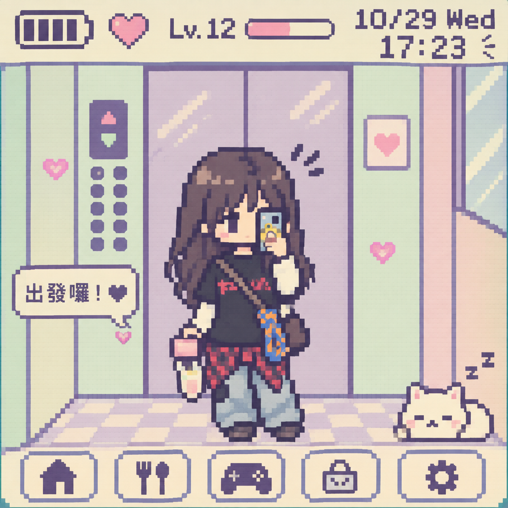
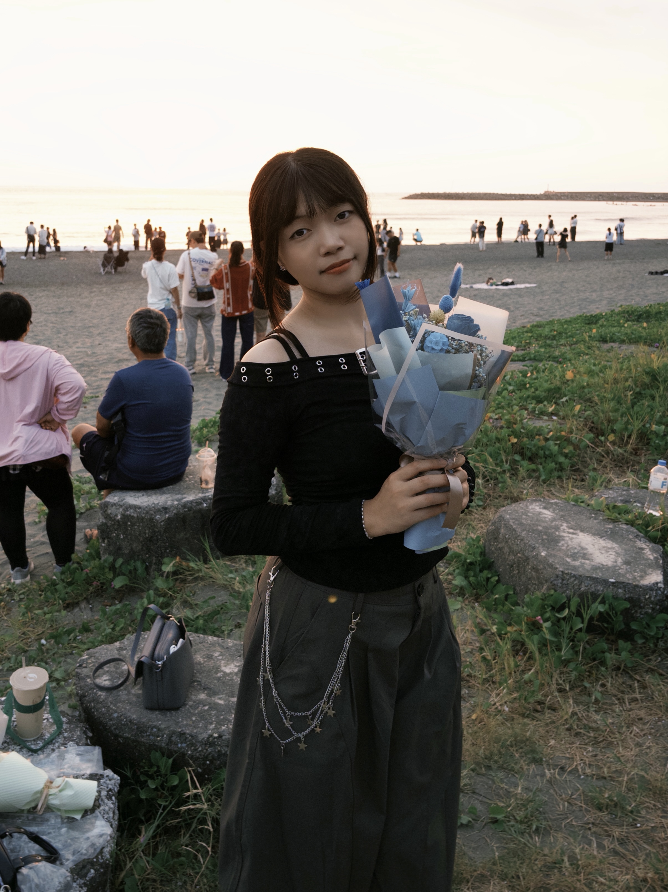
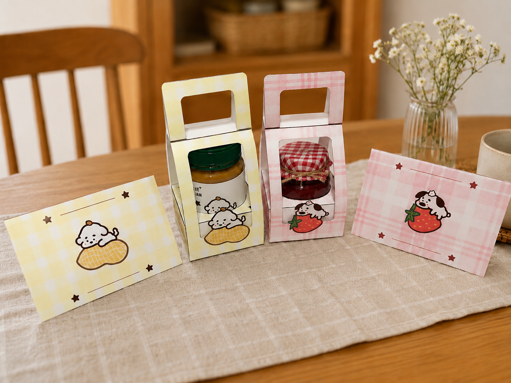
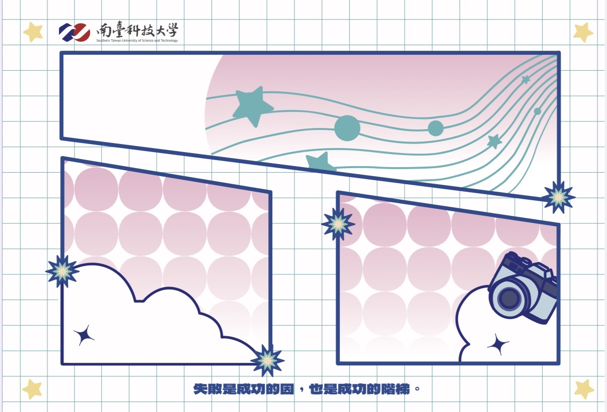
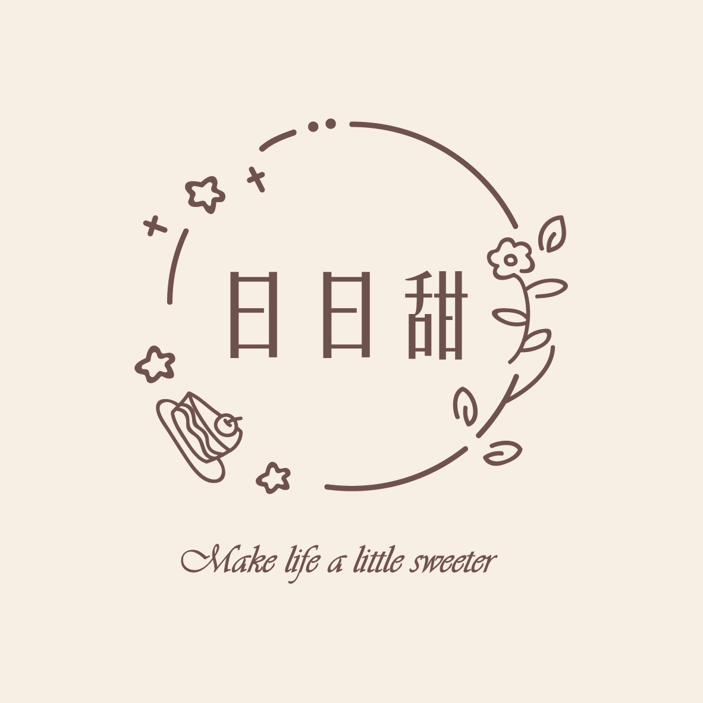
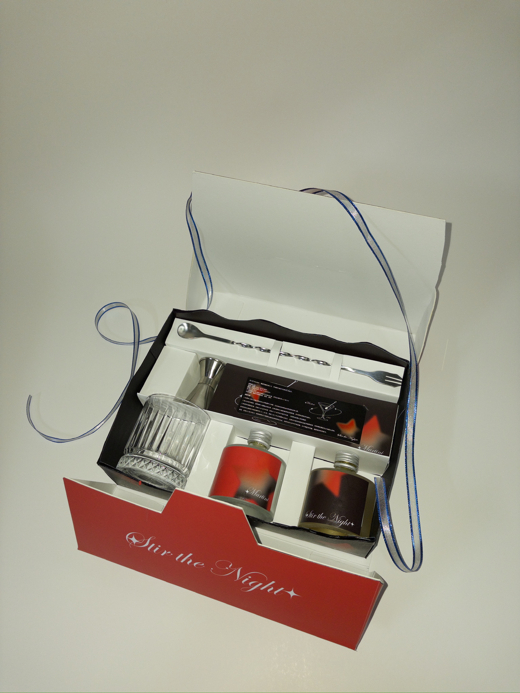
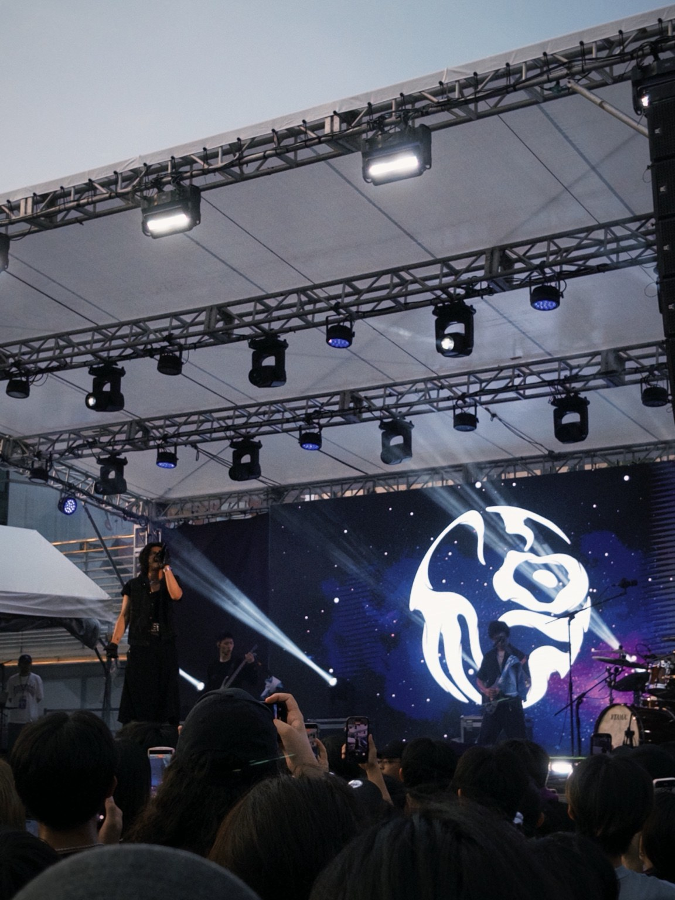

WELCOME TO MY WORLD ♡
我是大 I 人，歡迎認識我：3
Design · Music · Life

01 / INTRODUCTION

哈囉！我是采恩，也可以叫我 Ann。
是一個有點慢熟的大 I 人，喜歡音樂、設計，
也喜歡用自己的方式記錄生活。
曾經擔任學生會行銷部副部長，
累積了活動企劃、社群經營及視覺設計的經驗。
希望能透過設計，讓生活多一點有趣的小事。
02 / CREATIVE PROJECTS
每一次的設計，都是一個新的故事。
Here are some of my creative projects.

品牌形象、Logo包裝設計。

因學生會的關係被選上，為學校公告看板設計新的背景。

為此作出一份CIS。

從包裝結構到視覺呈現的設計過程。
03 / MY FAVORITE THINGS

MY FAVORITE BAND
音樂對我來說，是生活中不可缺少的一部分。
比起單純聽歌，我更喜歡親自走進現場，
感受音樂、燈光與大家一起享受音樂的氛圍。
喜歡參加音樂祭，也喜歡透過不同的歌曲，
收藏生活中每個值得紀念的瞬間。
04 / GET IN TOUCH
謝謝你來到我的小小世界 ♡